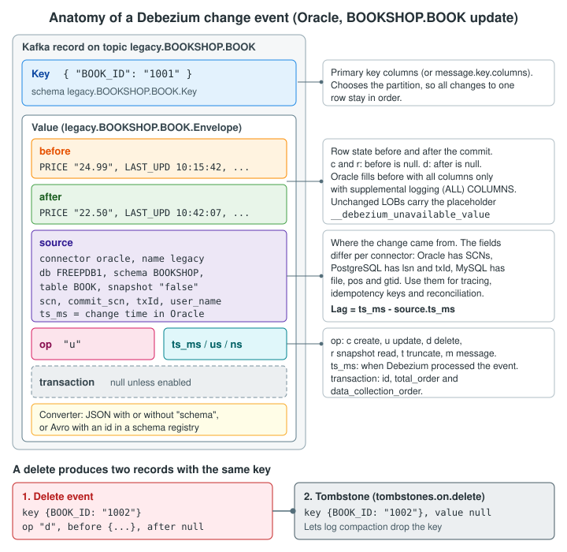

Anatomy of a Change Event
|
This content was generated with the assistance of AI and should be verified against the official documentation before being relied on in production. |
Every component downstream of a Debezium source connector reads the same thing: a change event. The JDBC sink that
fills the PostgreSQL mirror tables, the anti-corruption layer in the new Spring Boot bookshop application, the
reconciliation jobs and the dashboards that track replication lag all parse the same key and the same value envelope.
If a consumer misreads one field (treats a snapshot read as an insert, ignores the tombstone after a delete, uses the
wrong timestamp to measure lag, or assumes that the before image is always complete), the new database drifts away
from the legacy one without any error. This drift is the most expensive kind of migration bug, because it is found
weeks later, during reconciliation, and the event that caused it may no longer be in Kafka.
This page takes one change event apart, field by field, using the Bookshop legacy Oracle table BOOKSHOP.BOOK and the
bookshop-oracle-source connector (topic.prefix=legacy). It explains the key, the value envelope, the
connector-specific source block, the operation codes, the three timestamps, transaction metadata, delete events and
tombstones, primary key updates, truncate events and the effect of the JSON converter’s schemas.enable setting. It
ends with annotated update and delete events and a list of the mistakes that consumers most often make. How the event
is serialized (JSON, Avro, CloudEvents) is the subject of
Serialization & Schema Registries, and how each
column type is encoded inside before and after is the subject of
Data Types & Precision.
Checked on 2026-11-09 against Debezium 3.7.1.Final (quay.io/debezium/connect:3.7.1.Final, Kafka 4.x in KRaft mode)
and Oracle AI Database 26ai Free (image gvenzl/oracle-free:23.26.3, PDB FREEPDB1). The events on this page use the
canonical bookshop-oracle-source configuration: the JSON converter with schemas enabled,
decimal.handling.mode=string (so every Oracle NUMBER, including the key, is a JSON string) and
provide.transaction.metadata=true. Their field names, field order and types match the events captured from that
connector in the worked example run on 2026-11-09. The
rows (BOOK_ID 1001 to 1003) and values such as SCNs, transaction IDs and timestamps are illustrative.
Where a change event lives
A Debezium source connector turns each committed row change into one Kafka Connect SourceRecord. The Kafka Connect
worker serializes the record with the configured converters and writes it to a topic. For the relational connectors
the topic name is <topic.prefix>.<schemaName>.<tableName>, so every change to the legacy BOOK table lands in
legacy.BOOKSHOP.BOOK, every change to ORDERS in legacy.BOOKSHOP.ORDERS, and so on. Oracle keeps unquoted
identifiers in upper case, and Debezium keeps the case that the database reports, so the topic and the field names are
upper case too.
Each record has two parts that are produced independently:
-
The key, which identifies the row. It contains the columns of the table’s primary key (or of a unique key, or of the columns named in
message.key.columns). -
The value, which describes the change. For data changes the value is an envelope with the row images and the metadata.
Each part has a schema and a payload inside Kafka Connect. The schema describes the structure (field names, types,
optionality, logical type names such as org.apache.kafka.connect.data.Decimal) and the payload holds the data. How
much of the schema is written to Kafka depends on the converter. The JSON converter with schemas.enable=true writes
both in every message, the JSON converter with schemas.enable=false writes only the payload, and the Avro converter
writes only a schema ID and keeps the schema in a registry.
The schemas have predictable names. With topic.prefix=legacy:
| Schema name | What it describes |
|---|---|
|
The key: one field per primary key column ( |
|
A row of |
|
The value as a whole: |
|
The |
Because each table has its own Value schema, each table also has its own schema history in a schema registry. A
column added to BOOK creates a new version of legacy.BOOKSHOP.BOOK.Value and does not touch the schema of
ORDERS. The connector also makes sure that every schema name is a valid Avro name: the logical server name must start
with a letter or an underscore, and characters that are not letters, digits or underscores in schema and table names
are replaced with underscores.
The following diagram shows the parts of a change event and what each part is for.

The key
For each captured table, the key has one field for each column of the table’s primary key, as it is defined when the
event is created. The legacy BOOK table has a single-column primary key, BOOK_ID NUMBER(10), so its key has one
field. With the canonical decimal.handling.mode=string, every Oracle NUMBER column becomes a string, the key
included, so the key payload is {"BOOK_ID":"1001"}. With the default precise mode the same column would be an
int64 (the Oracle connector chooses int32 only when the precision minus the scale is less than 10) and the payload
would be {"BOOK_ID":1001}. A consumer or a key-based lookup written for one mode does not match the other, so pick
the mode before the first consumer is written.
{
"schema": {
"type": "struct",
"fields": [
{
"type": "string",
"optional": false,
"field": "BOOK_ID"
}
],
"optional": false,
"name": "legacy.BOOKSHOP.BOOK.Key"
},
"payload": {
"BOOK_ID": "1001"
}
}The key matters for three reasons in a migration.
Ordering. Kafka assigns a record to a partition by hashing its key. All changes to BOOK_ID 1001 therefore go to the
same partition, and Kafka keeps them in the order in which the connector wrote them. A consumer that processes one
partition in order sees every row’s changes in commit order. Changes to different rows in different partitions have no
order guarantee between them. A consumer that needs cross-row order (for example, an ORDERS row and its ORDER_LINE
rows) must use the transaction metadata described later on this page, or a topic with one partition.
Upserts. The JDBC sink bookshop-pg-mirror-sink uses primary.key.mode=record_key, so the key fields become the
primary key of the legacy_book mirror table, and an update becomes an upsert on that key. A wrong key means a wrong
upsert target.
Compaction and deletes. Kafka log compaction keeps the latest record per key. A delete is expressed as a tombstone with the same key (see Delete events and tombstones).
Tables without a primary key
Legacy schemas often contain tables without a primary key: audit trails, staging tables loaded by batch jobs, heap
tables created years ago. For such a table the key schema is optional and the key is null, which means that Kafka
spreads the changes over all partitions round-robin and that the JDBC sink cannot upsert them. There are two fixes:
-
Add a primary key or a unique constraint to the legacy table, if the legacy application tolerates it.
-
Tell Debezium which columns form the key with
message.key.columns. Each entry is<schemaName>.<tableName>:<column>,<column>, the table part is a regular expression, and entries for several tables are separated with semicolons.
The Bookshop schema has primary keys on every table. The example below uses a hypothetical legacy table
BOOKSHOP.STOCK_MOVEMENT without a primary key, whose rows are unique by BOOK_ID and MOVED_AT.
{
"message.key.columns": "BOOKSHOP.STOCK_MOVEMENT:BOOK_ID,MOVED_AT"
}The columns that you choose must really be unique, because the sink treats two rows with the same key as one row. If no combination is unique, keep the table out of the upsert sink and load it in append mode instead.
The value envelope
The value of a data change event is a structure with the following fields.
| Field | Present | Meaning |
|---|---|---|
|
Optional |
The row as it was before the change. |
|
Optional |
The row as it is after the change. |
|
Always |
Metadata about where the change came from. The fields depend on the connector (see The source block). |
|
Always |
The operation: |
|
Optional |
The time at which the connector processed the event, in milliseconds, microseconds and nanoseconds, taken from the clock of the JVM that runs the Kafka Connect task. |
|
Optional |
|
The schemas of before and after are the same (legacy.BOOKSHOP.BOOK.Value), so a consumer can compare the two
images field by field to find out which columns changed. Debezium does not send a list of changed columns. Comparing
images is the consumer’s job, and it only works when the before image is complete, which is why supplemental logging
on all columns matters on Oracle and REPLICA IDENTITY FULL matters on PostgreSQL (see
Data Types & Precision).
Operation codes
op |
Operation | Notes |
|---|---|---|
|
Create (insert) |
|
|
Update |
Both images are present. An update that changes the primary key is emitted as a delete and a create instead (see Primary key updates). |
|
Delete |
|
|
Read |
A row read during a snapshot (initial, incremental or blocking). |
|
Truncate |
A |
|
Message |
Emitted only by the PostgreSQL connector, for logical decoding messages written with |
A consumer that writes to the new database should treat r exactly like c but idempotently, as an upsert. A row can
be read by a snapshot and then created, updated or deleted by streaming events, and a restarted snapshot can read the
same row twice. A consumer that inserts on r and fails on a duplicate key will stop at the first restart. The
snapshot phases are explained in Initial Snapshots and
Incremental & Blocking Snapshots.
The source block
The source block answers the question "where exactly did this change come from?". It is the key to tracing,
deduplication and reconciliation during a migration. Its schema, io.debezium.connector.oracle.Source, is shared by
every table the Oracle connector captures. The Oracle connector documents these fields:
| Field | Type | Meaning |
|---|---|---|
|
string |
The Debezium version, for example |
|
string |
The connector type, |
|
string |
The logical name, which is the |
|
int64 |
When the change was made in the database. For snapshot reads, when the snapshot read the row. |
|
string |
Whether the event is part of a snapshot. |
|
string |
The database. With |
|
string |
Extra ordering information. Usually |
|
string |
The schema and table of the changed row: |
|
string |
The Oracle transaction ID. Not included for snapshot reads. |
|
string |
The system change number (SCN) of the change. |
|
string |
The SCN of the commit of the transaction that contains the change. Only present with the LogMiner adapter. |
|
string, int64 |
The SCN and time at which the transaction started. |
|
int64 |
The time at which the transaction was committed. |
|
string, int64, int32 |
The position of the change in the redo log: the record set ID, the SQL sequence number and the redo thread (RAC instances each write their own thread). |
|
string |
The database user who made the change. Only populated with the LogMiner adapter. |
|
string |
The Oracle |
|
string |
The logical change record position. Used by the XStream adapter, |
|
string |
The SQL statement reconstructed from the redo log. |
|
int64 |
The sequence of the event within its transaction. Present in the 3.7.1 events of the worked example, |
The SCNs are strings, not numbers, because an SCN can exceed the range that some consumers can represent. Compare them
as big integers (java.math.BigInteger in Java), never as strings and never as double.
The source block of other connectors
The envelope is the same for every relational connector, but the source block is not. When a migration has several
sources (for example, the Oracle catalogue plus a MongoDB reviews collection), consumers must read the position fields
of each connector.
| Connector | Position fields | Transaction fields |
|---|---|---|
Oracle |
|
|
PostgreSQL |
|
|
MySQL / MariaDB |
|
|
SQL Server |
|
none separate |
MongoDB |
|
|
Reference: Debezium — PostgreSQL connector, data change events, Debezium — MySQL connector, data change events
Treat the table above as a guide to where to look. Each connector page documents the exact list for that connector, and
those pages are the reference. For the Bookshop migration the important point is that the source block, not the Kafka
offset, identifies an Oracle change. With the canonical provide.transaction.metadata=true, the processed_change
idempotency table in the new application stores the identity tx:<commit_scn>:<transaction id>:<total_order>, for
example tx:4815163:0a001f00c3020000:1 for the update event below. Snapshot reads, which have no transaction, fall
back to op:scn:txId:key (the operation code, source.scn, the hexadecimal source.txId and the key payload). A
change that Debezium re-emits after a restart keeps these values. See
Listening to Events in Applications.
Timestamps and lag
A change event carries two sets of timestamps, and confusing them is a common source of wrong lag graphs.
-
source.ts_ms(withsource.ts_usandsource.ts_ns) is the time of the change in the database. For Oracle LogMiner, this is the redo timestamp of the change, which has a resolution of one second.source.commit_ts_msis the commit time of the transaction. -
ts_ms(withts_usandts_ns) at the top level of the envelope is the time at which Debezium processed the event, from the clock of the Kafka Connect JVM.
The difference between the two is the capture lag, the time from the change in Oracle until Debezium emitted the event:
capture lag = ts_ms - source.ts_ms
The end-to-end lag that matters for a migration (from the legacy commit to the row in PostgreSQL) is measured in the
consumer as now - source.ts_ms at the moment it commits its own write. Both differences mix two clocks, so keep the
database host and the Kafka Connect hosts synchronized with NTP, and expect noise of about one second from the Oracle
timestamp resolution. During an initial snapshot source.ts_ms is the time of the snapshot read, not the time the row
was last changed, so snapshot events say nothing about lag. Filter op = r out of lag dashboards.
Kafka itself adds a third timestamp, the record timestamp, which is set by the producer (the Connect worker) when it
writes the record. It is close to ts_ms but is not part of the event payload. The Debezium connector metrics also
report lag (for example MilliSecondsBehindSource in the streaming metrics). See
Monitoring, Logging & Tracing for the metrics, and use
the event timestamps for per-event checks.
Transaction metadata
By default, events carry no information about which other events were part of the same database transaction. For a
migration this matters when one legacy transaction writes several tables. When the legacy application places an order,
it inserts one ORDERS row and several ORDER_LINE rows in one transaction. The LegacyOrderProjector in the new
application should not create a purchase_order with half of its lines.
With provide.transaction.metadata=true, the connector:
-
fills the
transactionfield of every data event withid(the transaction ID),total_order(the position of the event among all events of the transaction) anddata_collection_order(its position among the events for the same table), and -
writes a
BEGINand anENDevent for each transaction to the<topic.prefix>.transactiontopic, that islegacy.transaction. TheENDevent containsevent_countand adata_collectionsarray with the number of events per table.
{
"provide.transaction.metadata": "true"
}{
"status": "BEGIN",
"id": "0a001f00c3020000",
"ts_ms": 1794220927000,
"event_count": null,
"data_collections": null
}
{
"status": "END",
"id": "0a001f00c3020000",
"ts_ms": 1794220927000,
"event_count": 3,
"data_collections": [
{ "data_collection": "FREEPDB1.BOOKSHOP.ORDERS", "event_count": 1 },
{ "data_collection": "FREEPDB1.BOOKSHOP.ORDER_LINE", "event_count": 2 }
]
}A consumer that buffers the events of a transaction until it has seen as many as the END event announces can apply
the whole transaction to PostgreSQL at once. The data events and the boundary events are on different topics and
partitions, so the consumer has to join them. Kafka Streams is a good fit, and the Debezium blog post on building DDD
aggregates with Kafka Streams shows the idea. Transaction metadata is only available for transactions that start after
the connector is deployed, and snapshot reads carry no transaction. How the Bookshop consumers use it is shown in
Listening to Events in Applications.
Annotated example: a BOOK update
The legacy application lowers the price of a book:
UPDATE BOOKSHOP.BOOK
SET PRICE = 22.50,
LAST_UPD = SYSDATE
WHERE BOOK_ID = 1001;
COMMIT;Reference: Debezium — Oracle connector, update events
The value of the resulting event on legacy.BOOKSHOP.BOOK is shown below without its schema. With the canonical JSON
converter (schemas enabled) every message is an object {"schema": ..., "payload": ...}, and the listing is its
payload member. The comments after // are annotations for this page and are not part of the event.
{
"before": {
"BOOK_ID": "1001", // NUMBER(10) as a string (decimal.handling.mode=string)
"ISBN": "9780000000011",
"TITLE": "Strangler Patterns in Practice",
"AUTHOR_ID": "501",
"PRICE": "24.99", // NUMBER(10,2) as an exact string
"CURRENCY": "EUR",
"PUBLISHED": 1557792000000, // io.debezium.time.Timestamp: 2019-05-14T00:00:00
"ACTIVE_FLG": "Y",
"SUPPLIER_ID": "42",
"LAST_UPD": 1794219342000 // 2026-11-09T10:15:42
},
"after": {
"BOOK_ID": "1001",
"ISBN": "9780000000011",
"TITLE": "Strangler Patterns in Practice",
"AUTHOR_ID": "501",
"PRICE": "22.50", // the new price
"CURRENCY": "EUR",
"PUBLISHED": 1557792000000,
"ACTIVE_FLG": "Y",
"SUPPLIER_ID": "42",
"LAST_UPD": 1794220927000 // 2026-11-09T10:42:07
},
"source": {
"version": "3.7.1.Final",
"connector": "oracle",
"name": "legacy",
"ts_ms": 1794220927000, // change time in Oracle
"snapshot": "false",
"db": "FREEPDB1",
"sequence": null,
"ts_us": 1794220927000000,
"ts_ns": 1794220927000000000,
"schema": "BOOKSHOP",
"table": "BOOK",
"txId": "0a001f00c3020000",
"scn": "4815162",
"commit_scn": "4815163",
"lcr_position": null,
"rs_id": "0x00002d.0000a1b2.0010",
"ssn": 0,
"redo_thread": 1,
"user_name": "BOOKSHOP_APP",
"redo_sql": null,
"row_id": "AAAR3sAAMAAAACXAAA",
"commit_ts_ms": 1794220927000,
"start_scn": "4815160",
"start_ts_ms": 1794220926000,
"txSeq": 1
},
"transaction": { // provide.transaction.metadata=true
"id": "0a001f00c3020000",
"total_order": 1,
"data_collection_order": 1
},
"op": "u",
"ts_ms": 1794220927412, // Debezium processing time: capture lag 412 ms
"ts_us": 1794220927412318,
"ts_ns": 1794220927412318000
}Reference: Debezium — Oracle connector, update events
Reading the event from top to bottom:
-
beforeandaftercontain every column, because theBOOKtable has supplemental logging for all columns. The only differences arePRICEandLAST_UPD, which is exactly what theUPDATEchanged. -
BOOK_ID,AUTHOR_ID,SUPPLIER_IDandPRICEare JSON strings, because the connector usesdecimal.handling.mode=string. The price keeps its exact value and scale ("22.50"), and the consumer parses it withnew BigDecimal(...)and the identifiers withLong.parseLong(...). With the defaultprecisemode,PRICEwould instead be a base64 string such as"CMo="(the unscaled value 2250 as big-endian two’s-complement bytes, with the scale 2 only in the schema) and the identifiers would be JSON numbers. That base64 form is the most common surprise with Debezium JSON, and Data Types & Precision explains the options. -
PUBLISHEDandLAST_UPDare OracleDATEcolumns. With the defaulttime.precision.mode, they becomeio.debezium.time.Timestamp, milliseconds since the epoch, with no time zone. OracleDATEhas no time zone either, so the value is the wall-clock time of the legacy database, written as if it were UTC. -
source.user_nameis the legacy application’s database user. A loop-prevention filter for reverse replication can use this field to recognize changes that were written by the reverse sink’s user (see Cut-over & Reverse Replication). -
source.ts_msis the time of the change in Oracle andts_msis the time Debezium processed it. The difference is 412 ms. -
transactionidentifies the Oracle transaction (id, the same value assource.txId) and the position of the event in it. ThisUPDATEwas the only statement of its transaction, so both orders are 1.
The schema of the value tells the consumer how to decode each field. The fragment below shows the field definitions of
the legacy.BOOKSHOP.BOOK.Value schema (the full message repeats them for before and after and adds the source
schema and the envelope fields).
{
"type": "struct",
"optional": true,
"name": "legacy.BOOKSHOP.BOOK.Value",
"fields": [
{ "type": "string", "optional": false, "field": "BOOK_ID" },
{ "type": "string", "optional": false, "field": "ISBN" },
{ "type": "string", "optional": false, "field": "TITLE" },
{ "type": "string", "optional": true, "field": "AUTHOR_ID" },
{ "type": "string", "optional": true, "field": "PRICE" },
{ "type": "string", "optional": true, "field": "CURRENCY" },
{
"type": "int64", "optional": true, "field": "PUBLISHED",
"name": "io.debezium.time.Timestamp", "version": 1
},
{ "type": "string", "optional": true, "default": "Y", "field": "ACTIVE_FLG" },
{ "type": "string", "optional": true, "field": "SUPPLIER_ID" },
{
"type": "int64", "optional": true, "field": "LAST_UPD",
"name": "io.debezium.time.Timestamp", "version": 1
}
]
}The optionality of each field follows the nullability of the column: BOOK_ID (the primary key), ISBN and TITLE
are NOT NULL in the legacy table, so only they are required. A column default (ACTIVE_FLG DEFAULT 'Y') appears as
the default of the field. With decimal.handling.mode=string the numeric columns carry no precision or scale in the
schema: PRICE is a plain string. With precise mode it would be a bytes field named
org.apache.kafka.connect.data.Decimal with the parameters scale 2 and connect.decimal.precision 10.
Delete events and tombstones
When the legacy application deletes a book, the connector writes two records with the same key.
DELETE FROM BOOKSHOP.BOOK WHERE BOOK_ID = 1002;
COMMIT;Reference: Debezium — Oracle connector, delete events
The first record is the delete event. op is d, before holds the last state of the row and after is null.
{
"before": {
"BOOK_ID": "1002",
"ISBN": "9780000000028",
"TITLE": "Reading the Redo Log",
"AUTHOR_ID": "502",
"PRICE": "19.99",
"CURRENCY": "EUR",
"PUBLISHED": 1557792000000,
"ACTIVE_FLG": "N",
"SUPPLIER_ID": "42",
"LAST_UPD": 1794219342000
},
"after": null, // the row no longer exists
"source": {
"version": "3.7.1.Final",
"connector": "oracle",
"name": "legacy",
"ts_ms": 1794221010000,
"snapshot": "false",
"db": "FREEPDB1",
"sequence": null,
"ts_us": 1794221010000000,
"ts_ns": 1794221010000000000,
"schema": "BOOKSHOP",
"table": "BOOK",
"txId": "0b000400d1020000",
"scn": "4815230",
"commit_scn": "4815231",
"lcr_position": null,
"rs_id": "0x00002d.0000a1f0.0010",
"ssn": 0,
"redo_thread": 1,
"user_name": "BOOKSHOP_APP",
"redo_sql": null,
"row_id": "AAAR3sAAMAAAACXAAB",
"commit_ts_ms": 1794221010000,
"start_scn": "4815229",
"start_ts_ms": 1794221010000,
"txSeq": 1
},
"transaction": {
"id": "0b000400d1020000",
"total_order": 1,
"data_collection_order": 1
},
"op": "d",
"ts_ms": 1794221010388,
"ts_us": 1794221010388104,
"ts_ns": 1794221010388104000
}Reference: Debezium — Oracle connector, delete events
The second record is a tombstone: the same key, {"BOOK_ID": "1002"}, and a null value. It is not a Debezium
envelope at all. Kafka uses it for log compaction. When a topic has cleanup.policy=compact, Kafka eventually keeps only
the latest record for each key, and a record with a null value tells it to remove the key entirely. Without the
tombstone, a compacted topic would keep the delete event for BOOK_ID 1002 forever.
docker compose exec kafka /kafka/bin/kafka-console-consumer.sh \
--bootstrap-server kafka:9092 \
--topic legacy.BOOKSHOP.BOOK \
--from-beginning \
--formatter-property print.key=true \
--formatter-property print.headers=true \
--formatter-property null.literal=TOMBSTONEReference: Debezium — MySQL connector, tombstone events
What this means for consumers in the migration:
-
The JDBC sink with
delete.enabled=truedeletes the row fromlegacy_bookwhen it receives the delete event or the tombstone. Deletes are executed by primary key, so the sink needs aprimary.key.modeother thannone. The Bookshop sink usesrecord_key. See JDBC Sink Connector. -
A hand-written consumer must handle a
nullvalue. The tombstone is the record that most often crashes a consumer with aNullPointerException, and Spring for Apache Kafka needs@Payload(required = false)to receive it. Either ignore tombstones (the delete event already carries the information) or use them as the delete signal. -
The
ExtractNewRecordStatetransformation (event flattening) handles deletes and tombstones withdelete.tombstone.handling.mode. See Event Flattening.
To stop the connector from emitting tombstones, set tombstones.on.delete=false. Do this only if no topic is compacted
and no consumer relies on them, for example when the topics are read by the outbox router.
{
"tombstones.on.delete": "false"
}Primary key updates
An UPDATE that changes a primary key column changes the key of the event, and Kafka cannot express "this record
moved from key A to key B" in a single record. Debezium therefore splits it. For the Oracle connector, an update of
BOOK_ID from 1003 to 9003 produces three records:
-
A delete event (
op = d) with the old key,{"BOOK_ID": "1003"}. -
A tombstone with the old key (if
tombstones.on.deleteistrue). -
A create event (
op = c) with the new key,{"BOOK_ID": "9003"}.
The PostgreSQL and MySQL connectors document two message headers on these records: __debezium.newkey on the delete
event (the new key) and __debezium.oldkey on the create event (the old key). A consumer can use them to tell a key
change from an unrelated delete and insert, for example to move the book_author rows of a book to its new ID instead
of deleting them. The delete and the create can land on different partitions, because their keys differ, so a
consumer must not assume that it sees them one after the other.
Legacy applications rarely update primary keys, but legacy data fixes sometimes do. If the old and new rows must be linked in the new database, either keep a surrogate key in the new model that does not depend on the legacy key, or use the headers to translate the change.
Truncate events
A TRUNCATE TABLE produces one event per truncated table with op = t, a null key and null images. Because the key
is null, the event can be written to any partition, so on a topic with several partitions a consumer may see the
truncate before or after updates that happened earlier. Ordering is only guaranteed on a single-partition topic.
The Oracle connector skips truncates by default (skipped.operations=t). For a migration that is usually the safe
choice: a legacy batch job that truncates and reloads SUPPLIER_CATALOGUE every night would otherwise empty the
mirror table and refill it row by row. If the new database must follow truncates, remove t from skipped.operations
and make sure the sink handles them (the JDBC sink has truncate.enabled).
{
"skipped.operations": "none"
}Snapshot reads
When the connector starts with an initial snapshot, it reads every existing row of the captured tables and emits it
with op = r, before = null and after set to the row. The source block has snapshot set to a value other than
false, no txId, and ts_ms set to the time of the read. The scn is the SCN at which the snapshot was taken, the
same for every row of a consistent snapshot.
For the new database, a snapshot read means "this row exists with these values". It must be applied as an upsert,
because the same row can also arrive later as a streamed change, and because an interrupted snapshot is repeated.
Incremental snapshots interleave r events with streamed events for the same table, and Debezium resolves the
conflicts with watermarks, as explained in
Incremental & Blocking Snapshots.
The JSON converter and schemas.enable
The quay.io/debezium/connect image uses org.apache.kafka.connect.json.JsonConverter for keys and values unless
the worker or the connector sets other converters. By default the JSON converter embeds the schema in every message:
each record is an object with schema and payload, and the schema is several times larger than the payload. For the
BOOK table the schema of the value repeats the ten column definitions twice (for before and after) plus the
twenty-odd fields of the source schema.
The canonical bookshop-oracle-source keeps the schemas. You can turn them off per connector, for a pipeline whose only
consumers are hand-written applications:
{
"key.converter": "org.apache.kafka.connect.json.JsonConverter",
"key.converter.schemas.enable": "false",
"value.converter": "org.apache.kafka.connect.json.JsonConverter",
"value.converter.schemas.enable": "false"
}The trade-off is important for a migration:
-
With schemas (
schemas.enable=true), every message is self-describing. A consumer can decodeDecimalvalues, tell aTimestampfrom a plain number and find out which fields are optional. The Debezium JDBC sink needs this information: without a schema it does not recognize the record as a Debezium change event and skips it (the worked example run logged "isn’t a Debezium record" for every record until the schemas were enabled). A JSON pipeline that feeds the JDBC sink must keep schemas enabled (or use Avro). This is why the Bookshop source keeps them. -
Without schemas, messages are smaller and easier to read, but the type information is gone. With the default
precisemodePRICEis a base64 string that the consumer can only decode if it knows the scale from somewhere else. Use this only withdecimal.handling.mode=stringand a consumer that knows the legacy types. -
With Avro and a schema registry, messages carry a schema ID and the registry holds the schema. This keeps the type information and the small size, and it adds compatibility checks when the legacy schema changes. See Serialization & Schema Registries.
The key and the value converters are independent. The JDBC sink reads the key to build the primary key, so the key converter needs schemas too.
Mistakes consumers make
The following mistakes all lead to silent drift between the legacy database and the new one. Each has a simple check.
| Mistake | Effect | Check |
|---|---|---|
Treating |
The consumer stops at the first restarted snapshot, or skips rows. |
Apply |
Ignoring tombstones, or crashing on them |
Deleted rows stay in the new database, or the consumer dies on a |
Count delete events per table and compare with the row count difference during reconciliation. |
Reading |
With |
Parse the strings of the canonical |
Measuring lag from the top-level |
The lag graph always shows zero. |
Use |
Assuming |
Change detection on |
Check supplemental logging on Oracle, |
Assuming order across tables or partitions |
An |
Use transaction metadata, or defer foreign key checks in the target, or retry. |
Comparing SCNs as strings or doubles |
Idempotency checks accept old events or reject new ones. |
Parse SCNs as big integers. |
The checks belong in the reconciliation jobs described in Verification & Reconciliation, and the idempotency rules in Offsets, Restarts & Exactly-Once. The patterns that these events feed (mirror tables, the anti-corruption layer, the strangler cut-over) are in Migration Patterns with CDC and on the architecture page Migration Path: From a Legacy Stack to a Modern One.
References
The structure of the event examples on this page matches the events captured from bookshop-oracle-source in the
worked example run on 2026-11-09; the row values, SCNs, transaction IDs and timestamps are illustrative.